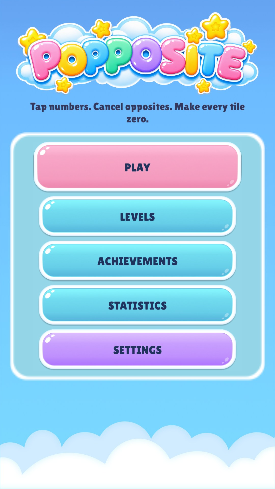
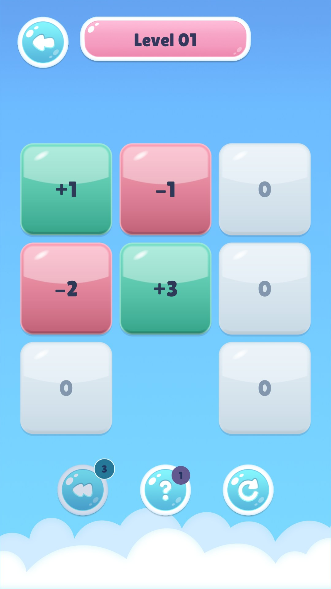
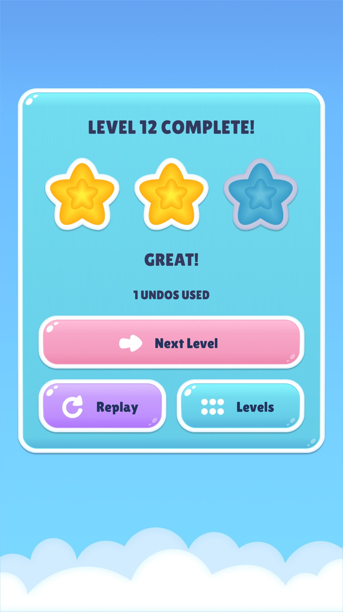

Our first game · Android
Popposite.
A little positive. A little negative.
A whole lot of “one more try.”
A number puzzle inspired by Lights Out. Think through each tap and bring every active tile to zero.
Simple rules. Plenty to untangle.
Every tap adds up.
Pick a number.
Tap an active, nonzero tile. That tile becomes zero, and its previous number is added to its active neighbors directly above, below, left, and right.
Find the balance.
Positive and negative numbers can cancel each other out. Diagonals and gaps are unaffected, and a zero neighbor can become active again.
Bring it to zero.
Clear every active tile to finish the puzzle. The goal stays simple; finding your way there is the interesting part.
In the game
A little help.
A new challenge.
1,000 levels
A campaign of number puzzles to work your way through.
Undo & Hints
Reconsider a move or get a nudge when you need one.
Earn your stars
Star-based progression gives each puzzle something to aim for.
Rewarded ads
Optional rewarded advertisements are implemented. Availability for the launch release is still being finalized.
Inside Popposite
A little look at the game.
Real game UI, captured in the Unity Editor from our current development project. These pre-release presentation previews use isolated test boards and results; the final game may change.


Unity Editor capture · pre-release


Unity Editor capture · pre-release


Unity Editor capture · pre-release
Select an image to view it at full size.
Stay curious
Something on your mind?
We’d love to hear it.